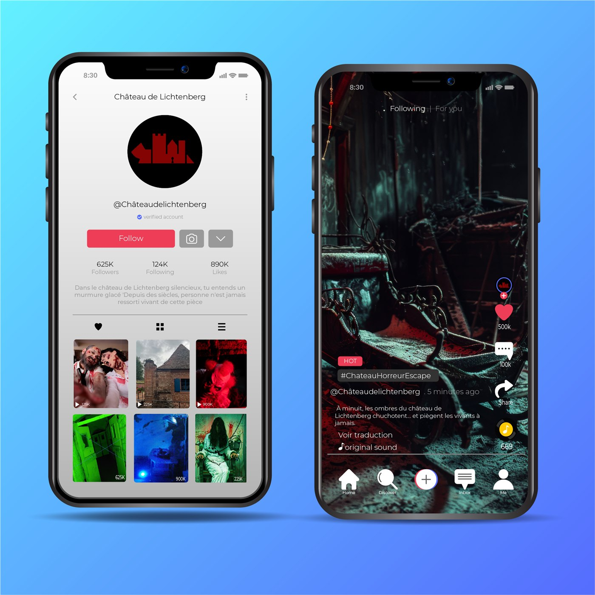
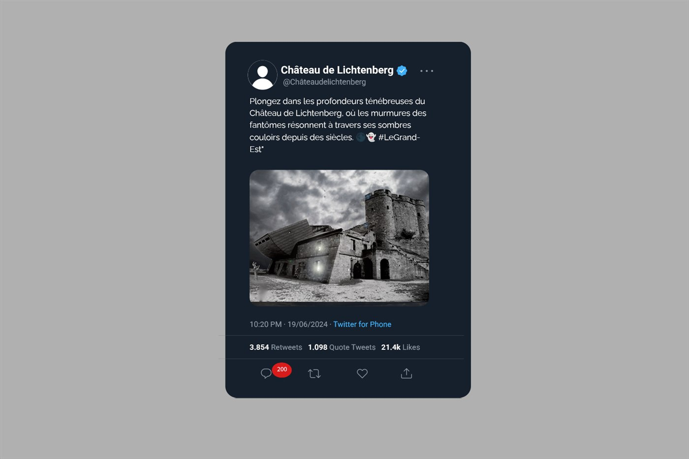

La nuit du château maudit
Projet de communication pour le Château de Lichtenberg · 2024
Projet réalisé en équipe dans le cadre d'Eventify, une agence de communication fictive. Le Château de Lichtenberg souhaitait développer sa fréquentation et toucher de nouveaux publics. Notre réponse : imaginer un escape game d'horreur inspiré de l'histoire du château et construire sa communication digitale.
Contexte du projet
L'analyse de la fréquentation du Château de Lichtenberg a montré une forte présence des familles et des enfants, mais une fréquentation plus faible des 18–30 ans et des touristes.
Pour toucher ce public, l'équipe a imaginé une nouvelle activité plus immersive : un escape game d'horreur mêlant patrimoine, légendes du château et recherche de sensations fortes.
Mon rôle
Chargé d'études : analyse des publics et des tendances afin d'orienter le positionnement et la stratégie de communication du projet.
Objectifs
- Développer la notoriété de l'escape game à l'échelle locale et internationale
- Attirer davantage de visiteurs régionaux, nationaux et internationaux
- Augmenter la fréquentation des adultes, notamment les 18–30 ans
- Favoriser une expérience suffisamment marquante pour générer du bouche-à-oreille
Stratégie
La communication devait s'appuyer sur plusieurs plateformes Social Media afin d'adapter les contenus aux différents publics, tout en construisant un univers visuel cohérent avec le positionnement horreur et historique de l'expérience.